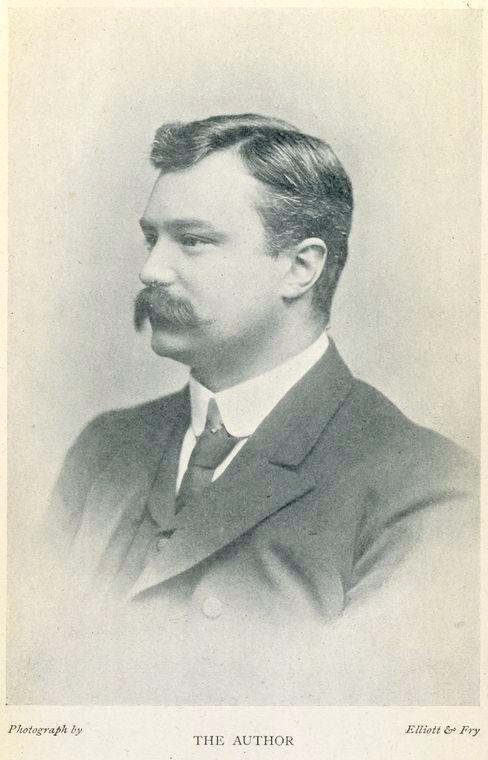

리버풀 해운회사의 평범한 직원이었어요. 콩고행 화물 기록을 보다가 이상한 점을 발견하죠 — 콩고에서 고무·상아가 쏟아져 들어오는데, 그 대가로 나가는 배에는 교역품이 아니라 총과 사슬뿐이었던 거예요. '대가 없이 나오는 산물 = 강제 노동'이라는 결론을 숫자만으로 끌어냈습니다.
회사가 침묵을 요구하자 사표를 내고 기자가 됐어요. 콩고개혁협회(1904)를 만들어 케이스먼트의 보고서, 선교사들의 증언과 사진을 모아 세계 여론을 움직였고 — 결국 1908년 레오폴드 2세의 손에서 콩고를 떼어 내는 데 결정적 역할을 했죠. 역사상 첫 국제 인권 캠페인으로 불려요.
1차대전 때는 비밀 외교를 비판하는 반전 운동으로 감옥까지 갔어요. 권력이 아니라 기록과 양심 편에 반복해서 섰던 사람 — '장부의 얼굴을 한 악'(벨기에 파일)을 장부로 잡아낸, 이 도감의 폭로자 계보의 대표예요.